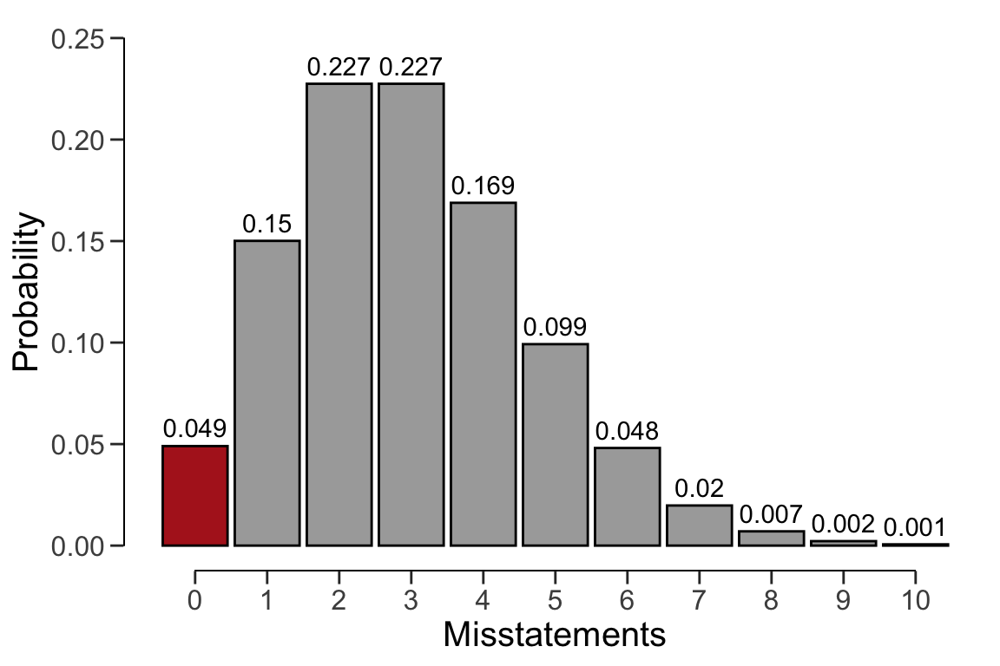
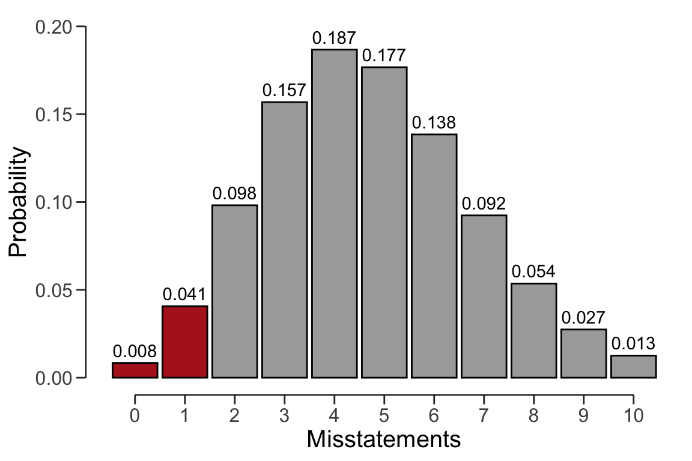
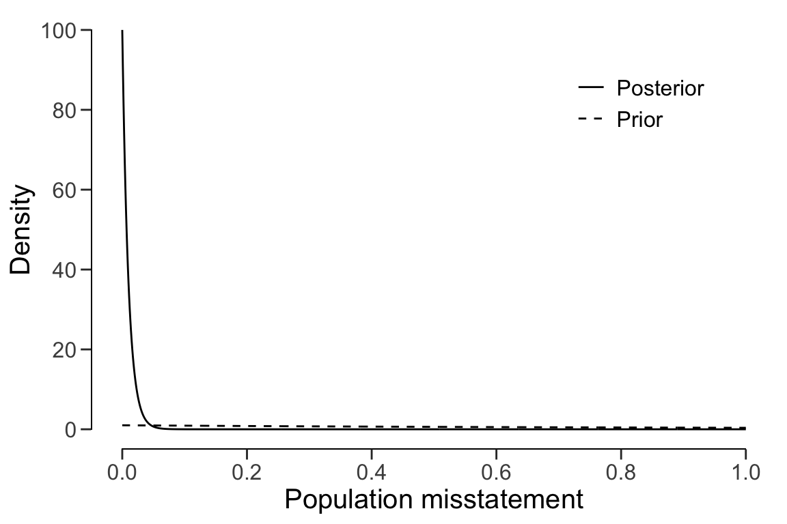
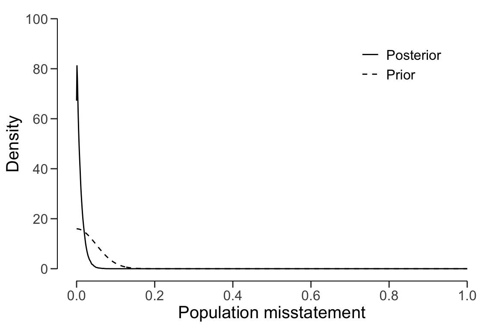

3.3 The Binomial Likelihood
Let’s consider how to use the binomial likelihood to calculate the minimum sample size needed to achieve a desired level of assurance. The binomial distribution is a discrete probability distribution that is commonly used to model the number of events occurring in a fixed number of trials. For our purpose, we can use the binomial distribution as a likelihood to model the number of misstatements that are expected to be found in the sample.
In audit sampling, the binomial likelihood is often used to approximate the hypergeometric likelihood since it is easier to work with (i.e., it only has two parameters: \(\theta\) and \(n\), while the hypergeometric has three: \(n\), \(N\), and \(K\)). However, the binomial likelihood is more conservative than the hypergeometric likelihood, meaning that resulting sample sizes will be higher.
The probability mass function (PMF) of the binomial distribution is given by:
\[\begin{equation} p(k; n, \theta) = \binom{n}{k} \theta^{k} (1-\theta)^{n - k}, \end{equation}\]
where \(k\) is the number of misstatements in the sample, \(n\) is the sample size and \(\theta\) is the misstatement rate expected in the sample.
3.3.1 Classical Planning
Concretely, the following statistical model is assumed:
\[\begin{equation} k \sim \text{Binomial}(n, \theta_{max}) \end{equation}\]
Given a desired misstatement tolerance \(\theta_{max}\), we can solve for the minimum sample size \(n\) needed to achieve the desired assurance level. A useful trick to utilize is that, if we do not expect any misstatements in the sample, the formula for the minimum required sample size reduces to:
\[\begin{equation} n = \lceil\frac{\ln(\alpha)}{\ln(1 - \theta_{max})}\rceil. \end{equation}\]
\(\lceil...\rceil\) is the ceiling function. Hence, \(\lceil1.2\rceil = 2\).
For example, if we want to achieve an assurance level of 95% (\(\alpha=0.05\)) for a performance materiality of \(\theta_{max} = 0.03\), then the required sample size under the assumption of zero expected misstatements in the sample is \(n = 99\).
ceiling(log(1 - 0.95) / log(1 - 0.03))
#> [1] 99In jfa, this sample size can be replicated using the planning() function.
planning(materiality = 0.03, expected = 0, conf.level = 0.95,
likelihood = "binomial")
#>
#> Classical Audit Sample Planning
#>
#> minimum sample size = 99
#> sample size obtained in 100 iterations via method 'binomial'The dbinom() function calculates the probability of observing \(k\) missatements
in a sample of \(n\) items given an assumed misstatement probability. The sample
size of 99 can be confirmed by checking that 99 is the minimum integer that
results in less than 5% probability of finding 0 misstatements if the population
misstatement is truly 3%.
dbinom(x = 0, size = 98, prob = 0.03) < 0.05 # 98: Not sufficient
#> [1] FALSE
dbinom(x = 0, size = 99, prob = 0.03) < 0.05 # 99: Sufficient
#> [1] TRUEWe can make this visually intuitive by showing the binomial(\(k\) | 99, 0.03) distribution and highlighting the probability for \(k = 0\). This probability should be lower than the required sampling risk \(\alpha = 0.05\).

However, if the number of expected misstatements in the sample is non-zero,
it becomes more difficult to solve the formula for \(n\). Hence, we can
iteratively try every value of \(n\) and return the smallest integer that
satisfies the sampling objectives. In jfa, this can be done by adjusting the
expected argument in the planning() function. For example, if we want to
achieve an assurance level of 95% (\(\alpha=0.05\)) for a performance materiality
of \(\theta_{max} = 0.03\), then the required sample size under the assumption of
one expected misstatement in the sample is \(n = 157\).
planning(materiality = 0.03, expected = 1, conf.level = 0.95,
likelihood = "binomial")
#>
#> Classical Audit Sample Planning
#>
#> minimum sample size = 157
#> sample size obtained in 156 iterations via method 'binomial'Once again, the sample size of 157 can be confirmed by checking that 157 is the minimum integer that results in less than 5% probability of finding 0 or 1 misstatements if the population misstatement is truly 3%.
sum(dbinom(x = 0:1, size = 156, prob = 0.03)) < 0.05 # 156: Not sufficient
#> [1] FALSE
sum(dbinom(x = 0:1, size = 157, prob = 0.03)) < 0.05 # 157: Sufficient
#> [1] TRUELike before, we can make this visually intuitive by showing the binomial(\(k\) | 157, 0.03) distribution and highlighting the probabilities for \(k = 0\) and \(k = 1\). The sum of these probabilities should be lower than the required sampling risk \(\alpha = 0.05\).

3.3.2 Bayesian Planning
Performing Bayesian planning with the binomial likelihood requires that you
specify a prior distribution for the parameter \(\theta\). Practically, this means
that you should provide an input for the prior argument in the planning()
function.
Setting prior = TRUE performs Bayesian planning using a default prior
conjugate to the specified likelihood (i.e., a beta prior). Concretely, this
means that the following statistical model is assumed:
\[\begin{align} k &\sim \text{Binomial}(n, \theta) \\ \theta &\sim \text{Beta}(\alpha, \beta) \end{align}\]
The beta prior distribution is conjugate to the binomial likelihood (see this list of conjugate priors), which means that the posterior distribution of \(\theta\) can be determined analytically. For example, if the prior distribution is beta(\(\alpha\), \(\beta\)) and the auditor has observed a sample of \(n\) items containing \(k\) misstatements, the posterior distribution for \(\theta\) is beta(\(\alpha + k\), \(\beta + n - k\)).
For example, the command below uses a default beta(\(\alpha=1\), \(\beta=1\)) prior
distribution to plan the sample, since planning() is given the binomial
likelihood. If we want to achieve an assurance level of 95% (\(\alpha=0.05\)) for
a performance materiality of \(\theta_{max} = 0.03\), then the required sample
size under the assumption of zero expected misstatements in the sample is
\(n = 98\).
plan <- planning(materiality = 0.03, expected = 0, conf.level = 0.95,
likelihood = "binomial", prior = TRUE)
summary(plan)
#>
#> Bayesian Audit Sample Planning Summary
#>
#> Options:
#> Confidence level: 0.95
#> Materiality: 0.03
#> Hypotheses: H₀: Θ > 0.03 vs. H₁: Θ < 0.03
#> Expected: 0
#> Likelihood: binomial
#> Prior distribution: beta(α = 1, β = 1)
#>
#> Results:
#> Minimum sample size: 98
#> Tolerable errors: 0
#> Posterior distribution: beta(α = 1, β = 99)
#> Expected most likely error: 0
#> Expected upper bound: 0.029807
#> Expected precision: 0.029807
#> Expected BF₁₀: 627.22You can inspect how the prior distribution compares to the expected
posterior distribution by using the plot() function. The expected posterior
distribution is the posterior distribution that would occur if you actually
observed the planned sample containing the expected misstatements.
plot(plan)
The input for the prior argument can also be an object created by the
auditPrior function. If planning() receives a prior for which there is no
conjugate likelihood available, it will numerically derive the posterior
distribution. For example, the command below uses a Normal(0, 0.05) prior
distribution to plan the sample using the binomial likelihood. Concretely, this
means that the following statistical model is assumed:
\[\begin{align} k &\sim \text{Binomial}(n, \theta) \\ \theta &\sim \text{Normal}(\mu = 0, \sigma = 0.05) \end{align}\]
prior <- auditPrior(method = "param", likelihood = "normal",
alpha = 0, beta = 0.05)
plan <- planning(materiality = 0.03, expected = 0, conf.level = 0.95,
likelihood = "poisson", prior = prior)
summary(plan)
#>
#> Bayesian Audit Sample Planning Summary
#>
#> Options:
#> Confidence level: 0.95
#> Materiality: 0.03
#> Hypotheses: H₀: Θ > 0.03 vs. H₁: Θ < 0.03
#> Expected: 0
#> Likelihood: poisson
#> Prior distribution: normal(μ = 0, σ = 0.05)T[0,1]
#>
#> Results:
#> Minimum sample size: 90
#> Tolerable errors: 0
#> Posterior distribution: Determined via MCMC sampling
#> Expected most likely error: 0.0008648
#> Expected upper bound: 0.029029
#> Expected precision: 0.028164
#> Expected BF₁₀: 19.08The resulting sample size under this prior is \(n = 90\), a reduction of 8 samples when compared to the default beta(1, 1) prior distribution.
plot(plan)